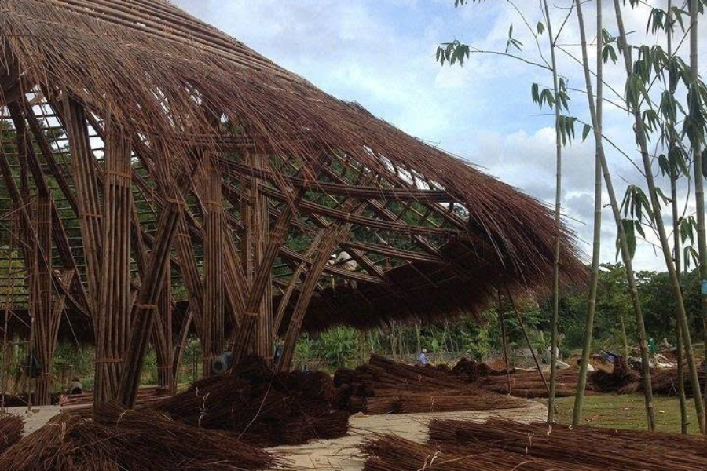
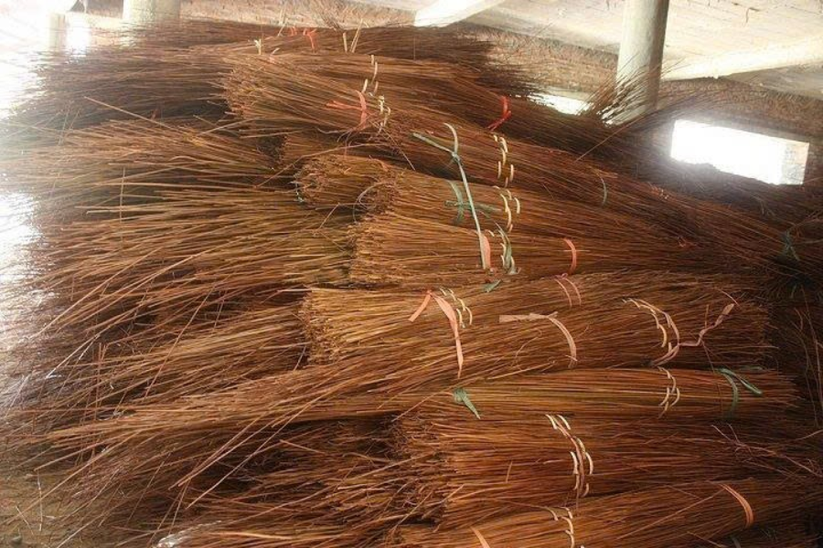
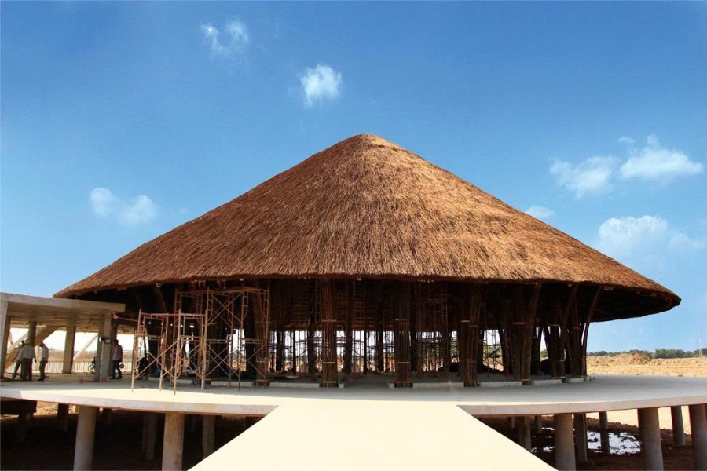
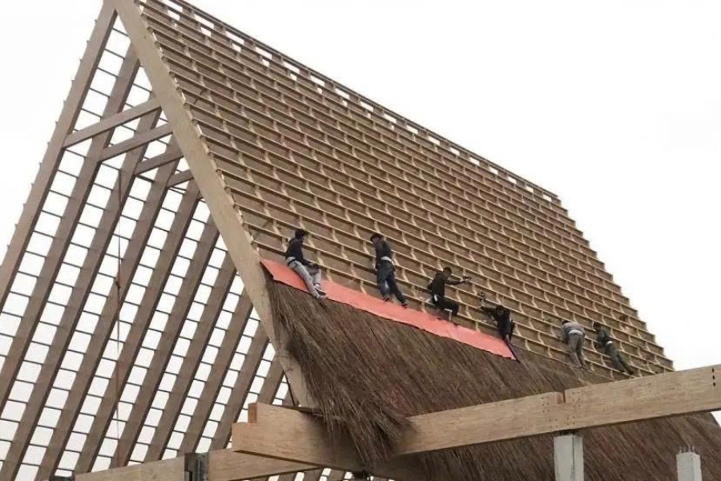

Lá guột không đơn thuần chỉ là vật liệu lợp mái truyền thống, mà còn là biểu tượng của lối kiến trúc đơn giản, mộc mạc, gần gũi với thiên nhiên và đầy tính thẩm mỹ. Tuy nhiên, để có được một công trình lợp mái lá vừa bền, vừa đẹp thì việc thi công đúng kỹ thuật là yếu tố quan trọng, then chốt. Tre Việt Building – Tự hào là đơn vị thi công hàng trăm, hàng ngàn công trình tre trúc trên toàn quốc, cam kết mang đến dịch vụ chất lượng cao. Hãy cùng khám phá quy trình thi công lợp mái lá guột tại đơn vị chúng tôi bạn nhé!
Khám phá quy trình thi công lợp mái lá guột chuyên nghiệp tại Tre Việt Building
Tre Việt Building sở hữu quy trình thi công mái lá guột bài bản, đảm bảo mỗi một công trình đều đạt chuẩn, bền, đẹp và chất lượng.
Tuyển chọn và xử lý nguyên vật liệu

Quy trình sẽ bắt đầu bằng việc tuyển chọn lá guột chất lượng cao. Lá phải tươi, non, không rách nát và đặc biệt là không bị sâu bệnh hại. Ngoài ra, lá sẽ được đội ngũ của chúng tôi tiến hành phơi khô đúng kỹ thuật, đảm bảo giữ được màu sắc tự nhiên, không bị ẩm mốc trong môi trường ẩm ướt. Song song đó, các vật liệu tre, gỗ dùng làm khung đỡ cũng sẽ được xử lý chống mối mọt kỹ càng, ngâm sấy đạt chuẩn để giúp gia tăng tuổi thọ cho toàn bộ công trình.
Lắp dựng khung mái chắc chắn
Khung mái được cho là nền móng quan trọng, bảo đảm độ vững chãi cho toàn bộ hệ thống mái lá guột. Tùy vào kiến trúc công trình mà đội ngũ nhân công của chúng tôi sẽ triển khai thiết kế khung mái với độ dốc phù hợp, giúp cho nước mưa thoát nhanh, giảm bớt tình trạng thấm dột. Và mỗi một thanh đòn tay, đòn kèo đều được chúng tôi bố trí khoa học, gia cố chắc chắn bằng dây buộc hoặc chốt tre. Vì thế sẽ đảm bảo được khả năng chịu lực và tính ổn định lâu dài của công trình.
Lợp lá guột theo kỹ thuật truyền thống
Lá guột được lợp theo dạng xếp lớp, chồng mí đều đặn tạo nên một bề mặt dày và kín. Mỗi lớp lá sẽ được buộc chặt vào đòn tay bằng dây mềm bền chắc, đảm bảo không bị bung rơi trước những cơn gió lớn hay các đợt mưa kéo dài. Thợ lợp của Tre Việt Building thực hiện đều tay, đúng hướng lá, đúng khoảng cách tiêu chuẩn để tránh tình trạng rò rỉ nước.
Ngoài ra, chúng tôi cũng rất chú trọng vào yếu tố thẩm mỹ khi hoàn thiện mái. Phần mép mái sẽ được vuốt đều, tạo nên đường viền mềm mại, tự nhiên, tôn lên vẻ đẹp đặc trưng của kiến trúc mái lá truyền thống.
Kiểm tra và hoàn thiện
Sau khi lợp xong, toàn bộ mái lá guột sẽ được kiểm tra kỹ lưỡng từng vị trí. Các khu vực bị hở, bị thiếu hay lợp chưa đều sẽ được chúng tôi điều chỉnh lại. Ngoài ra, nếu công trình yêu cầu, có thể phủ thêm lớp bảo vệ bằng dầu thông, sơn chống thấm tự nhiên hay phủ nano sinh học. Mục đích đó là để giúp gia tăng khả năng chống nấm mốc, chống thấm và kéo dài tuổi thọ của mái lên đến 8 hoặc 10 năm.
Bảo trì mái lá guột – Duy trì vẻ đẹp và gia tăng tuổi thọ công trình

Dù mái lá guột có được thi công đúng kỹ thuật đi chăng nữa thì yếu tố thời gian và môi trường vẫn sẽ làm ảnh hưởng đến chất lượng mái. Vậy nên, Tre Việt Building luôn luôn tư vấn giải pháp bảo trì định kỳ, nhằm giữ cho mái lá được bền đẹp và an toàn khi sử dụng cho khách hàng.
Bảo trì định kỳ theo chu kỳ 3 – 5 năm
Sau từ 3 – 5 năm sử dụng thì mái lá guột nên được tiến hành kiểm tra tổng thể, nhằm:
- Phát hiện và kịp thời xử lý sớm các dấu hiệu lá mục, lá bị rơi rụng hay bị lộ khung.
- Kiểm tra hệ thống khung đỡ, các dây buộc, mối nối để đảm bảo kết cấu mái vẫn vững chãi.
- Nếu như có tình trạng dột hay gió lùa thì đội ngũ Tre Việt Building sẽ tiến hành gia cố lại hoặc thay thế từng phần nhỏ mà đảm bảo không làm ảnh hưởng đến toàn bộ mái.
Chăm sóc mái lá guột đúng cách
Một số lưu ý quan trọng sau đây sẽ giúp công trình mái lá guột của bạn duy trì tuổi thọ tối ưu, bao gồm:
- Vệ sinh mái lá định kỳ, tránh tình trạng tích tụ lá khô, bụi bẩn và nấm mốc. Đây đều là những yếu tố làm giảm đi tuổi thọ của lá.
- Không được đặt vật nặng hay là trèo lên mái, tránh làm gãy khung hay là bung lá guột.
- Phủ lớp bảo vệ bổ sung, có thể là lớp sơn dầu tự nhiên, dầu thông hay nano phủ. Điều này sẽ giúp cho công trình mái lá guột của bạn luôn giữ màu sắc bền, đẹp và khả năng chống thấm vượt trội.
Hiện tại, đơn vị chúng tôi đang cung cấp dịch vụ bảo trì trọn gói, hỗ trợ quý khách hàng từ việc kiểm tra định kỳ cho đến xử lý các sự cố phát sinh. Mọi người hoàn toàn có thể yên tâm sử dụng công trình mà không phải lo đến chi phí, nhân lực hay là kỹ thuật sửa chữa.
Tre Việt Building – Đơn vị thi công mái lá guột hàng đầu Việt Nam

Tre Việt Building tự hào là đơn vị tiên phong trong lĩnh vực thi công, thiết kế các công trình tre trúc theo phong cách truyền thống, kết hợp với kỹ thuật hiện đại. Vậy vì sao nên lựa chọn Tre Việt Building?
- Chúng tôi đã đồng hành cùng hàng trăm, hàng ngàn công trình lợp mái lá guột trên toàn quốc, bao gồm các homestay, nhà vườn, spa, resort sinh thái,…
- Toàn bộ nguồn nguyên liệu tự nhiên, đạt chuẩn, được xử lý theo quy trình khắt khe nhằm đảm bảo độ bền, đẹp, chống ẩm mốc và mối mọt vượt trội.
- Đội ngũ thợ của Tre Việt Building có chuyên môn cao, lành nghề, thi công đúng kỹ thuật, đảm bảo tiến độ và chất lượng tuyệt đối.
- Tre Việt Building cung cấp dịch vụ hậu mãi toàn diện, bao gồm: Bảo trì định kỳ, sửa chữa, thay mới từng phần khi cần thiết, giúp cho công trình giữ được phong độ lâu dài.
Còn chần chờ gì nữa, hãy liên hệ ngay hôm nay để được Tre Việt Building tư vấn trọn gói dịch vụ với mức giá ưu đãi nhất nhé!
Thông tin liên hệ:
CÔNG TY TRÁCH NHIỆM HỮU HẠN TRE VIỆT BUILDING
Địa chỉ: 917 Phạm Văn Đồng, Phường Linh Xuân, Thành phố Hồ Chí Minh
Nhà máy sản xuất: Phú Hợp B, Xã Phú Lâm, Đồng Nai.
Điện thoại – Zalo: 093.123.5757
Email: info@treviet.com.vn
Xem thêm: Thi công lợp mái lá guột – Giải pháp kiến trúc xanh, bền, đẹp và tiết kiệm chi phí